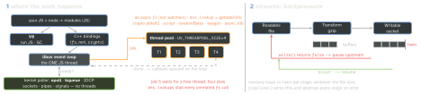

runtime · folio
In one line: Node = V8 (runs JS, GC) + libuv (event loop, the kernel’s poller for
sockets, a 4-thread pool for files, dns.lookup, crypto, zlib) + C++
bindings. Your JS runs on one thread per isolate — block it and every
request waits.
Download PDF Print view LaTeX source


Release lines — 9 October 2026
Even lines: 6 months Current → 12 Active LTS → 18 Maintenance; odd lines are never LTS (25 ended 1 Jun 2026). This month: 24 → Maintenance 20 Oct, 26 → LTS 28 Oct, 27 Alpha starts. From 27 (announced 10 Mar 2026): one major a year — Alpha Oct–Mar (semver-major still allowed), Current Apr–Oct, then 30 months LTS; no odd/even split; the number is the year of its Current (27.0.0 in 2027).
Where the work runs
- Kernel poller (also event ports on SunOS): 10k idle connections cost memory, not threads. Pool (list in 1): libuv has no portable async-file primitive; crypto and zlib are CPU-heavy.
UV_THREADPOOL_SIZE: default 4, max 1024 (libuv 1.30; was 128), read once when the pool starts. One pool per process, shared by every loop — workers too. Threads get 8 MB stacks (libuv 1.45).- DNS:
dns.lookup()=getaddrinfoon the pool, honours/etc/hosts— and it is the defaultlookupof everynet/httpconnect by host name; it keeps the resolver’s address order (verbatim) since 17.0.dns.resolve*()use c-ares: always the network, no pool, no/etc/hosts.
Blocking the loop
- Culprits:
*Synccalls (readFileSync,pbkdf2Sync,inflateSync,execSync), big JSON (Node’s guide: 50 MB takes 0.7 s to stringify, 1.3 s to parse), ReDoS (/(.+)+$/), long loops. Symptom: p99 of all routes, timers late, health checks fail, one core at 100 %. - See it:
perf_hooks.monitorEventLoopDelay()(histogram in ns, 10 ms resolution, callenable());performance.eventLoopUtilization()= share of time spent outsideepoll_wait;--cpu-prof(stable 22.4) writes a.cpuprofile. - Fix: partition (chunks +
setImmediate), offload (worker, child), stream instead ofreadFile. Phase order,nextTickvs promises:js-event-loop.
Streams
highWaterMarkis a threshold, not a limit (a Readable stops pulling). Default 64 KiB since 22.0 (was 16 KiB; still 16 KiB on Windows), 16 objects inobjectMode..pipe(): a source error does not close the destination (a leak).pipeline()(node:stream/promises) forwards the error and destroys every stream. Readables arefor await-able.
Buffer
- A
Uint8Arraysubclass; bytes live outside the V8 heap, counted inmemoryUsage().arrayBuffers(part ofexternal).subarrayshares memory (slicedeprecated,new Buffer()too). allocis zero-filled;allocUnsafemay hold old bytes (secrets). It,from(string)andconcatcarve from a shared pool belowpoolSize >>> 1;poolSize8 KiB → 64 KiB in 26.3 / 24.18.- Encodings:
utf8 utf16le latin1 base64 base64url hex. A UTF-8 character can split across chunks:setEncoding('utf8'), notchunk.toString().
EventEmitter
emit() calls listeners synchronously, in registration order. 'error' with no listener throws (process exits). >10 listeners on one event → MaxListenersExceededWarning — a leak hint, not a limit. errorMonitor observes without handling; captureRejections routes async-listener rejections to 'error'; events.once() → promise, events.on() → async iterator.
Past one thread
| isolation · sharing · talk | for · catch | |
|---|---|---|
worker_threads | own isolate, loop, Node instance, env copy — one process; SharedArrayBuffer + Atomics; postMessage clones or transfers | CPU-bound JS — keep a pool; process.exit() ends the thread only; no signals |
cluster | N processes via fork(); primary accepts and round-robins (not on Windows) or hands workers the socket; IPC | all cores for one server; no shared memory: sessions go to a store |
child_process | any program, own memory + V8: spawn streams, exec = shell + buffer (maxBuffer 1 MiB), execFile no shell, fork = Node + IPC | tools; exec + user input = injection; an unread pipe blocks the child |
Crashes and exit
- Unhandled rejection →
'unhandledRejection'if listened, else an uncaught exception: defaultthrowsince 15.0 (was a warning). 'uncaughtException': last resort — not safe to resume; clean up synchronously, exit, let the supervisor restart.- Exit codes: 1 uncaught exception · 7 the handler threw · 9 bad option · 13 unsettled top-level
await· 128 + signal (SIGINT 130, SIGTERM 143). SIGTERM/SIGINT exit by default — a listener removes that: exit yourself or wait for the supervisor’s SIGKILL. SIGKILL, SIGSTOP cannot be caught. process.exit()may drop pending stdout writes — setprocess.exitCode, let the loop empty.'exit'listeners: synchronous only.
Graceful shutdown, and outputs
process.once('SIGTERM', () => { // now WE must exit
server.close(async (err) => { // no new conns; idle ones
await db.end(); // closed (19+); runs after
process.exitCode = err ? 1 : 0; // the last conn ends
});
setTimeout(() => process.exit(1), 10_000).unref();
});
stream.getDefaultHighWaterMark(false) // 65536 (Windows 16384)
Buffer.from('€') // <Buffer e2 82 ac>: 1 char, 3 bytesBuilt in — since when (docs v26.11)
| feature | version | what to remember |
|---|---|---|
| type stripping | 22.6 flag; on 23.6 / 22.18; stable 25.2 / 24.12 | node app.ts: types → whitespace, no type check, tsconfig ignored. enum, runtime namespace, parameter properties, import = → ERR_UNSUPPORTED_TYPESCRIPT_SYNTAX (transform flag gone in 26.0). import type, .ts specifiers; no .tsx, no node_modules |
node:test | stable 20.0 | node --test runs *.test.*, test-*, test/**, a child process per file; mocks incl. timers, snapshots; coverage experimental |
| permissions | 23.5 / 22.13 | --permission (was --experimental-) denies fs, net, child, worker, addons, WASI, FFI, inspector → ERR_ACCESS_DENIED; grant --allow-fs-read=<path>, -fs-write, -child-process, -worker, -net (25.0). A seat belt: symlinks followed, open fds bypass. (Deno: deny by default) |
| CLI | 20.6 · 22.0 | --env-file (stable 24.10; the real environment wins) · --watch (stable 22.0) · --run (a package.json script, no pre/post hooks) |
| globals | 21.0 · 22.4 | fetch, WebSocket stable · AsyncLocalStorage stable 16.4 |
node:sqlite | 22.5; RC 25.7 | a synchronous API |
npm
npm ci: lockfile required, a mismatch with package.json is an error, wipes node_modules, writes nothing. npm 12 (8 Jul 2026; Node 26.11 still ships 11.20): dependency install scripts blocked unless the root’s allowScripts allows them; git and tarball-URL deps off.
Remember
Kernel for sockets, pool for files and DNS, workers for CPU — async never unblocks
the one JS thread.